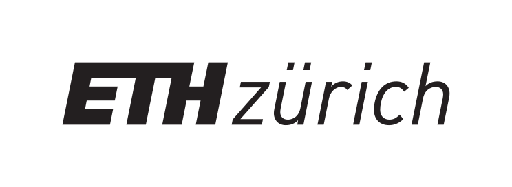
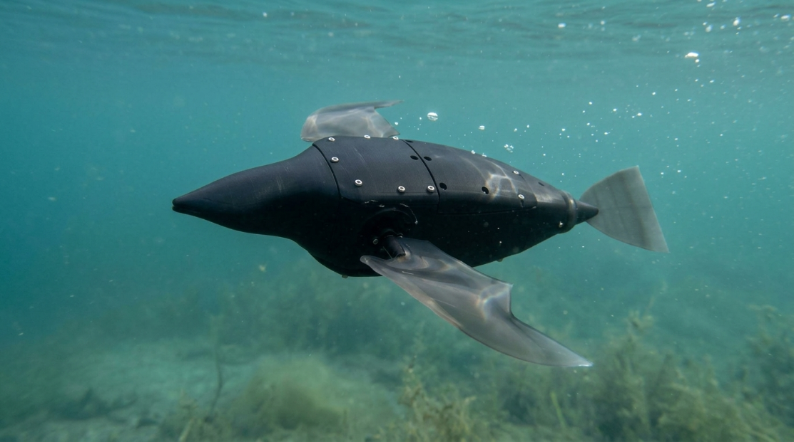

Our Vision
From prototype to mission-ready system, Lomvi is redefining how we explore underwater environments, push the boundaries of soft robotics, and protect marine life.
Document the ocean without leaving a mark.
Lomvi Robotics transforms bio-inspired engineering into non-invasive marine discovery. By replacing intrusive propellers with bird-like flapping wings, we empower researchers to observe aquatic life sustainably, silently, and without disturbing marine ecosystems.
From prototype to mission-ready system, Lomvi is redefining how we explore underwater environments, push the boundaries of soft robotics, and protect marine life.
Guillemot-inspired flapping wings, compliant soft-body structures, and onboard autonomous navigation-seamlessly integrated for agile, silent motion underwater.
Delicate marine ecosystems demand a gentler approach to exploration. Inspired by nature, Lomvi replaces rigid, propeller-driven machines with a soft, winged robot designed to move without disturbance. By operating silently and navigating autonomously, we are rethinking how technology interacts with marine environments-working with marine life, not against it.
In collaboration with ETH Zürich, the Soft Robotics Lab, and forward-thinking industry partners, Lomvi enables gentle, non-invasive exploration where marine life needs it most. Every partnership directly advances bio-inspired engineering and sustainable marine research.

Support a mission that merges technology and purpose. Your contribution fuels non-invasive marine research, advances soft robotics, and drives student-led Swiss innovation to new depths.
Collaborate With Us